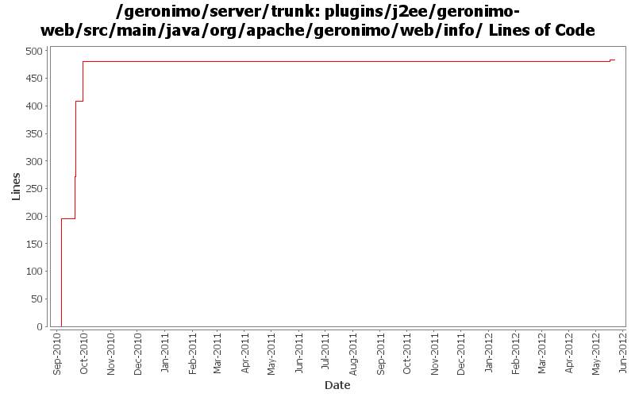

[root]/plugins/j2ee/geronimo-web/src/main/java/org/apache/geronimo/web/info

| Author | Changes | Lines of Code | Lines per Change |
|---|---|---|---|
| Totals | 21 (100.0%) | 491 (100.0%) | 23.3 |
| djencks | 11 (52.4%) | 345 (70.3%) | 31.3 |
| xuhaihong | 10 (47.6%) | 146 (29.7%) | 14.6 |
GERONIMO-6352 Set session configurations while they are explicitly configured
4 lines of code changed in 2 files:
GERONIMO-6352 session configuration info is not serialized correctly
5 lines of code changed in 2 files:
GERONIMO-5624 add more goo to WebAppInfo, use in jetty
73 lines of code changed in 3 files:
GERONIMO-5623 add some more web.xml data into our info tree
137 lines of code changed in 6 files:
GERONIMO-5623 add some more web.xml data into our info tree
76 lines of code changed in 3 files:
GERONIMO-5567 rewrite jetty integration to use a openejb-like info tree and the *Registration interfaces. This gets everything started in the right order and is a lot simpler. Old code still needs to be removed
196 lines of code changed in 5 files: